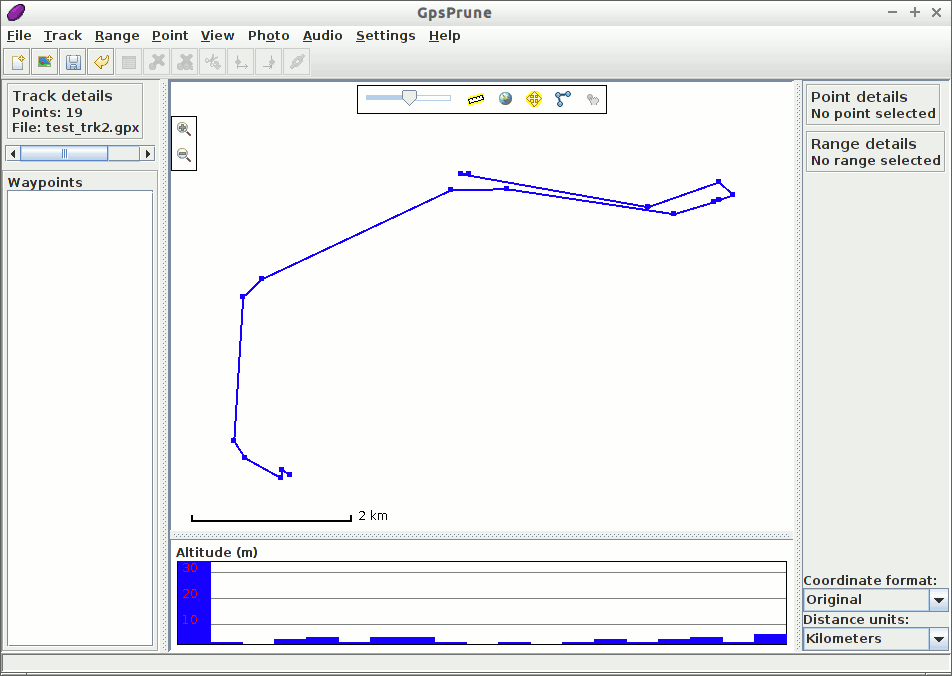

GpsPrune gyorstalpaló¶
A GpsPrune egy java alkalmazás koordináta adatok megjelenítésére és szerkesztésére. Felhasználható az adatok előkészítésére a GPS eszközökhöz és az azok által rögzített adatok elemzésére.
Ebben a gyorstalpalóban betöltünk és megjelenítünk a live lemezen található adatokat és ezek kiegészítésére néhány online információhoz férünk hozzá. Ezért hasznos lesz, ha ennek bemutatásához valamilyen fajta internet kapcsolattal rendelkezik.
GpsPrune intdítás¶
A Start menüből válassza a -t. Ez egy lent látható üres ablakot ad.

A menü parancs felhasználásával most betöltünk egy fájlt. Ez lehet egy GPX, egy KML vagy egy KMZ fájl, vagy akár egy vesszővel vagy tabulátorral tagolt fájl, ha rendelkezik egy ilyennel. Egy megfelelő, pár nyomvonalat tartalmazó GPX fájl megtalálható a lemezen itt: ~/data/vector/gpx/test_trk2.gpx, így ezt töltjük be.

Mivel ez a fájl két nyomvonalat tartalmaz, kiválaszthatjuk melyiket töltsük be. Válasszuk az elsőt és nyomjunk OK-t.
Most látnia kell a kékkel jelölt nyomvonalat a fehér háttéren. Ha ez a nyomvonal útpontokat is tartalmazna (ami nem áll fent), akkor azok is megjelennének a nevükkel. Lent a fő térkép alatt egy magassági grafikon látható, mely a nyomvonal metszetét mutatja, ha az tartalmaz magasságokat.
{kind=link}
Feltételezve, hogy van hálózati kapcsolata, bekapcsolhatja a térképet a földgömb ikonra kattintva a fő térképablak felső részén vagy a menüből .

Az egérrel húzogathatja a térképet és az egérgörgővel vagy dupla kattintással nagyíthat/kicsinyíthet. Jobb egérgombbal húzva megadhat egy téglalapot melyre nagyítani akar, a jobb gomb menü további lehetőségeket tartalmaz. Egy pontra kattintva megjelennek a részletek, beleértve a magasságot és az időpontot, ha rendelkezésre áll. A magassági metszetre is kattinthat, hogy a megfelelő pontot kiválassza.
A megjelenítés testreszabása¶
Megváltoztathatja a térképet a menüponttal. Vessünk egy pillantást egy alternatív térképforrásra az ötödik „Hikebikemap” kiválasztásával. Ez a hikebikemap.org-ról használja a térképet hegymászáshoz és kerékpározáshoz hasznos további információk megjelenítéséhez mint szintvonalak és kerékpárutak.

Haladó funkciók¶
Most, hogy fájlokat be tudunk tölteni és meg tudunk jeleníteni a mellékelt fájlrendszerből, nézzük meg, ki tudjuk-e egészíteni ezt néhány online információval is, a haladó funkciók használatával.
Wikipedia¶
Most találjunk ki több információt, arról hol van ez a nyomvonal. Ezt egy pont kiválasztásával tehetjük meg és ezután a menüből . Ez a cikkek listáját adja, melyek koordinátája a legközelebb vannak a kiválasztott ponthoz. Az egyik listaelemre kattintva további információt kapunk a lenti részben.

Ezután a Load gombot használhatja a pont betöltésére a GpsPrune-ba vagy a Show webpage gombot a Wikipedia oldal böngészőbe betöltésére.
Gpsies¶
Online szolgáltatást is használhatunk ugyanerről a területről egy másik nyomvonal letöltésére. A menü parancsot használhatjuk nyomvonalak keresésére a gpsies.com oldalról. A találatokról ismét egy listát kapunk és egyet szelektálhatunk a leírás megjelenítéséhez.

Kattintson a Load gombra a nyomvonal betöltéséhez és válasszuk ki a nyomvonal hozzáfűzéséhez a már betöltött adatokhoz. Most mindkét nyomvonalat láthatjuk ugyanabban az ablakban.
Távolságok mérése¶
Hogy megtudja, mennyi az emelkedés, akkor a pályának csak azt a részét választjuk ki, amely az emelkedőt tartalmazza, majd megtekinthetjük ennek a kiválasztott tartománynak a tulajdonságait, például a távolságot, az emelkedést és a lejtést.
Kattintson az emelkedő kezdőpontjába, Dunedintől északra, hogy kiválassza azt.
Válassza a -ot, hogy ezt a pontot a szelekció kezdetévé tegye.
Válasszon egy pontot az emelkedő tetején, a legmagasabb pontra kattintva a magasság metszeten.
Válassza a szelekció befejezéséhez.
Most láthatja a „Range details” részen, hogy a nyomvonal ezen része 8.55 km hosszú, 346 m-t emelkedik és 10 m-t lejt.
{kind=link}
Kipróbálandó dolgok¶
Válaszon egy pontot a nyomvonalon és törölje a paranccsal.
Rajzolja meg saját nyomvonalát a Create series of points paranccsal a jobb-kattintás menüből és mérje meg a teljes távolságot
Exportáljon egy képet a nyomvonaláról a paranccsal
Ha vannak saját nyomvonal fájljai gpx, kml, kmz vagy csv formátumban, töltse be őket GpsPrune-ba és nézze meg az egyik elérhető térképen
GpsPrune használata más rendszereken¶
A GpsPrune kipróbálása után a livelemezről lehet, hogy más rendszeren is használni szeretné, egy másik Linux vagy Mac OSX vagy Windows rendszeren. Néhány Linux kiadás tartalmazza a GpsPrune-t a szabványos könyvtárai között (keresse a „Prune”-t vagy „GpsPrune”-t), vagy egyszerűen letöltheti a honlapról a legújabb változatot.
Nem kell telepíteni, de a java runtime telepítését igényli, 1.5 vagy magasabb verziót. Kibővítheti a GpsPrune funkcionalitását más szabad szoftverek telepítésével, mint például GPSBabel, Gnuplot, Exiftool és Java3d.
Miután telepítette a GpsPrune-t az állandó rendszerén elmentheti a beállításait a menüponttal. A program emlékezni fog ezekre amikor legközelebb futtatja a GpsPrune-t. Vegye figyelembe, hogy a live lemez használatakor az összes, a normál fájlrendszerbe mentett minden fájl elveszik amikor leállítja a számítógépet.
A letöltött térkép csempéket is elmentheti a lemezre a menüpont kiválasztásával és egy könyvtár megadásával, melybe a képeket mentjük. Ez segít a megjelenítés gyorsításában mivel nem kell ismételten letölteni a képeket.
További olvasmányok¶
GpsPrune honlap: https://activityworkshop.net/software/gpsprune/
Képernyőképek: https://activityworkshop.net/software/gpsprune/screenshots.html
Segéd és oktatóanyagok: https://activityworkshop.net/software/gpsprune/how-tos.html